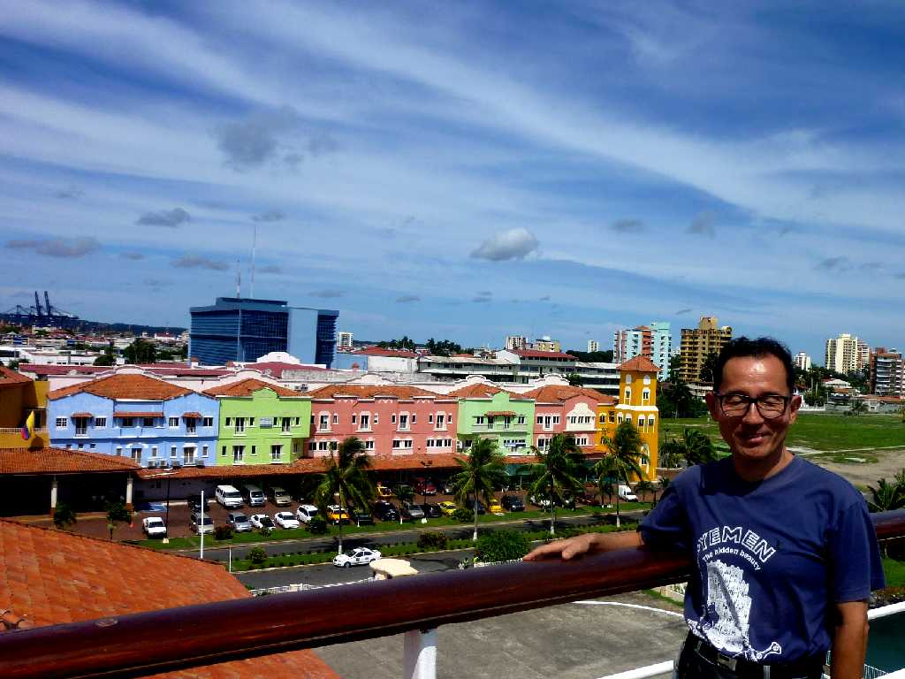
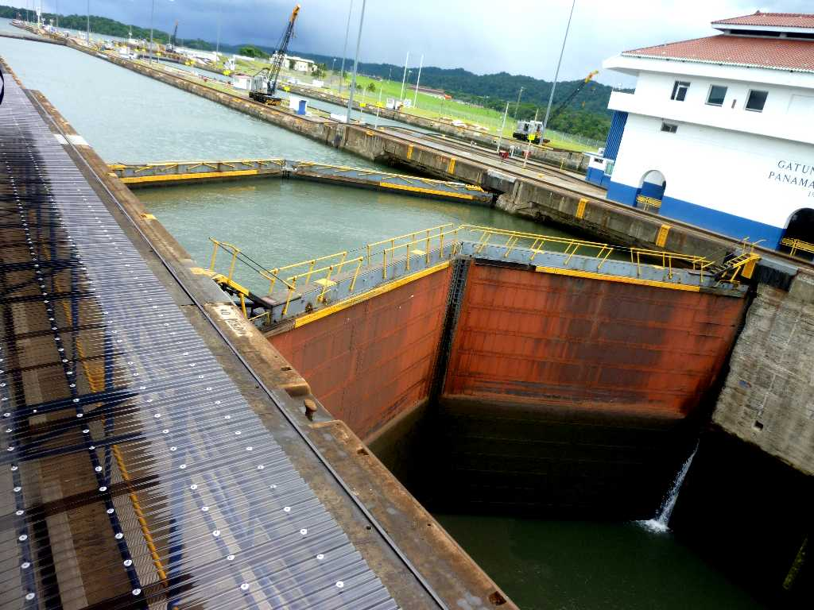
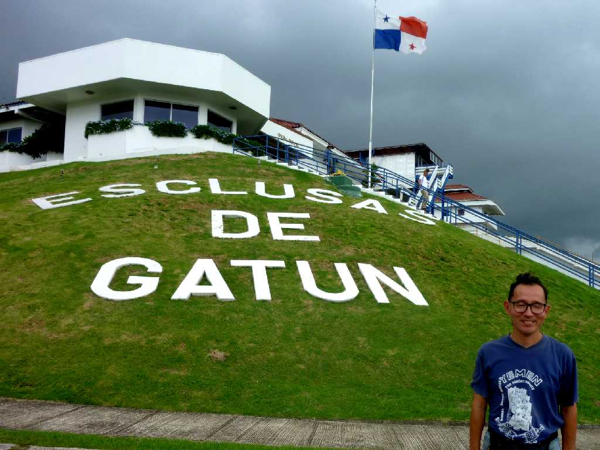
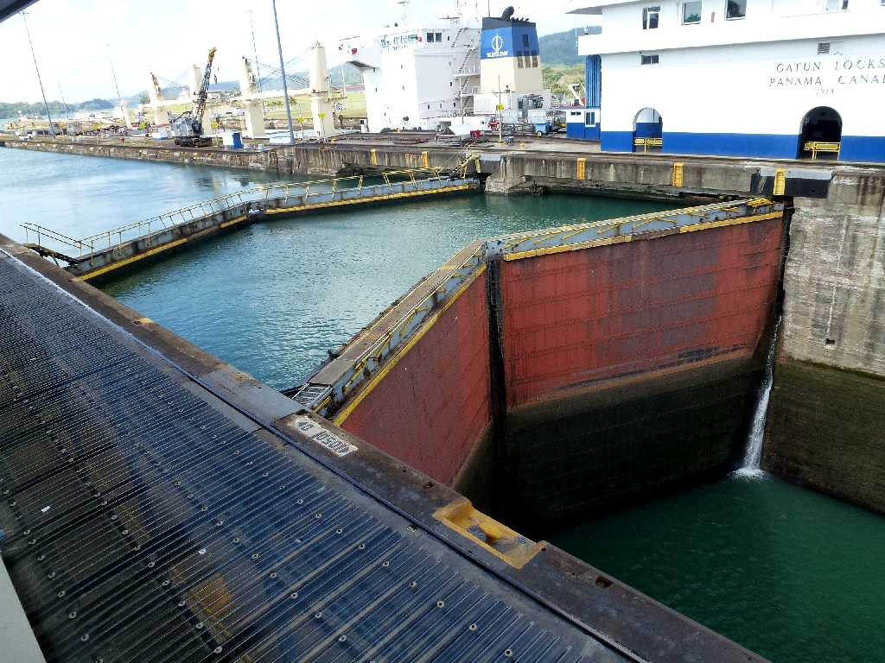
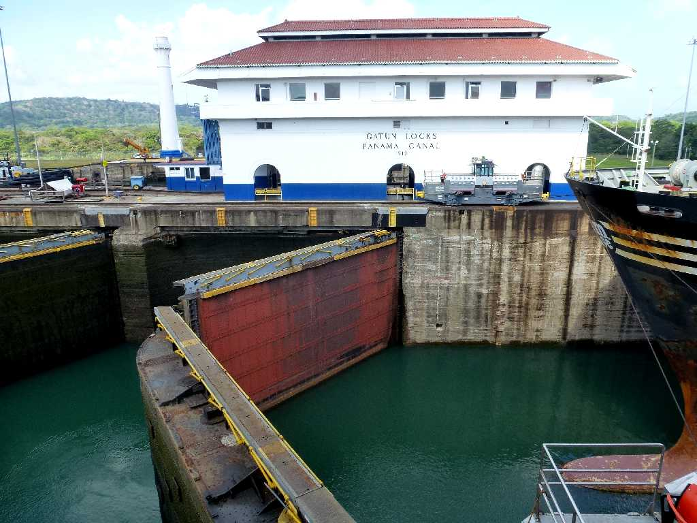
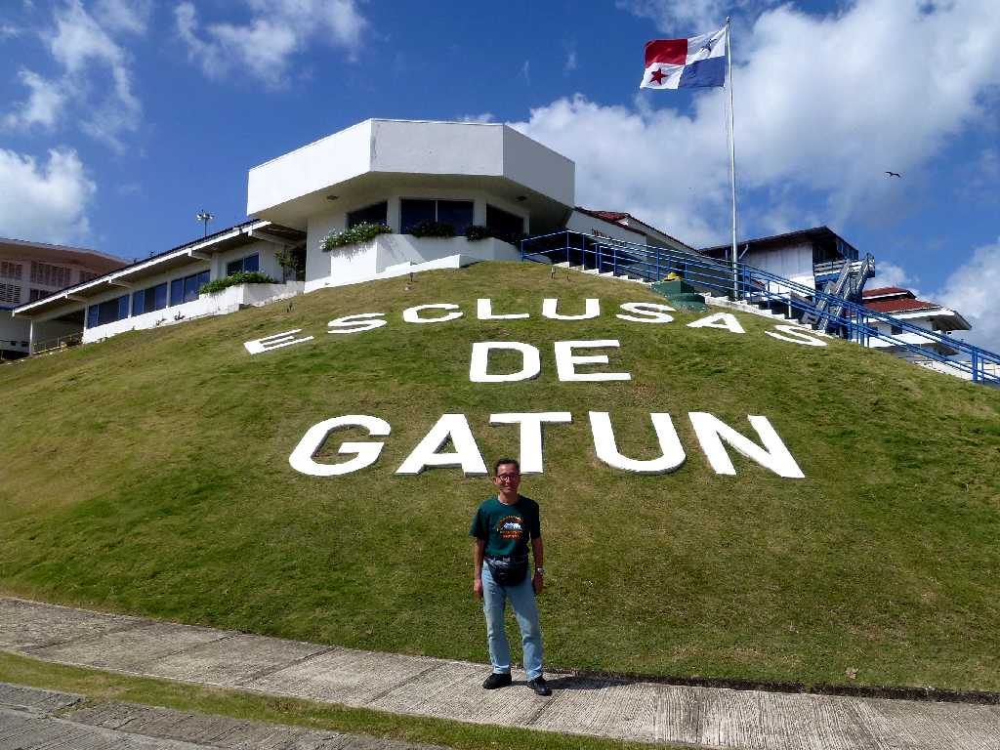

September 25 2010 SS Oceanic in Colon Port Panama
コロンブスが街の名前となったコロンはパナマ運河の大西洋側の街

Gatun Lock Panama Canal
パナマ運河の大西洋側の水門で左側がガトゥーン湖右側が大西洋

September 25 2010 Gatun
明日はパナマ運河を通り太平洋に戻る

February 10 2013 9:47 Gatun Lock
８０日間世界一周クルーズ以来３年ぶりの再訪問

February 10 2013 10:12 Gatun Lock

February 10 2013 Gatun